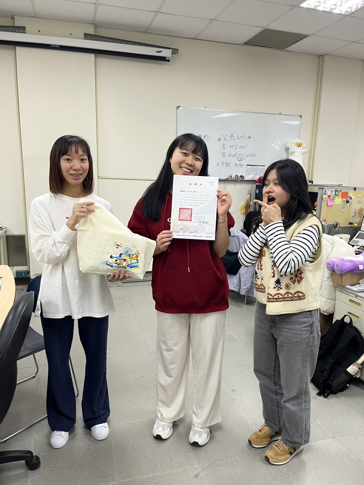
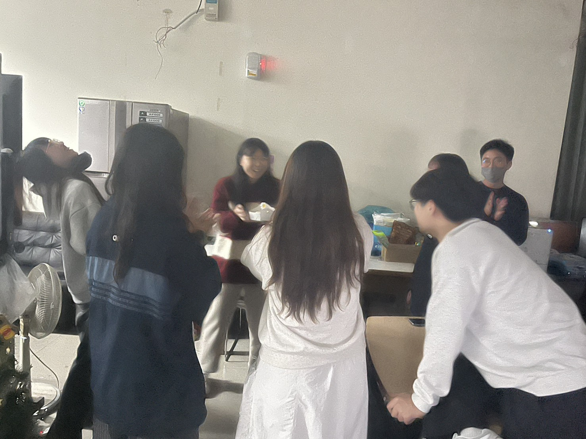
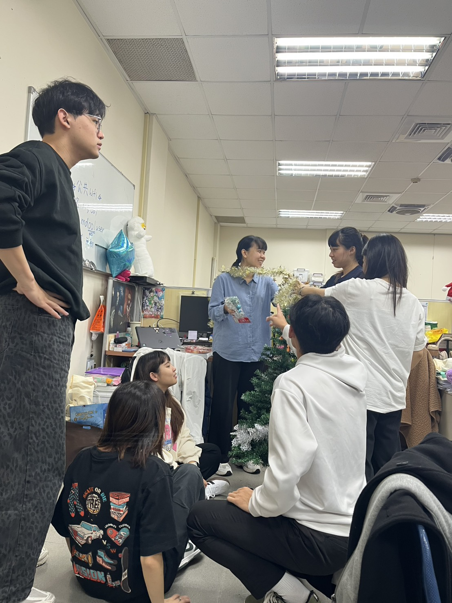

拍立得相片牆
-
 頒獎典禮林芷儀很少看起來這麼正常的 -
 大型詐騙現場找亮點 -
 是熊 聖誕樹的出生日阿立妳在找什麼？
拍立得相片牆

回憶 A 
回憶 B 
回憶 C
提示：想放更多張，就在 .polaroids 裡多加 <li>。
我們的待辦清單
打勾會自動記住（只存這台裝置）。
以前總說碩士生要把實驗室當成第二個家
但是直到今年夏天開始，才覺得實驗室真的像家✨
提示：想放更多張，就在 .polaroids 裡多加 <li>。
打勾會自動記住（只存這台裝置）。
琇雯生日快樂！！！
很開心能夠在你畢業前跟著學長姐一起幫你慶生
這是第一次在研究室幫你慶生，也是最後一次，所以顯得格外有意義
你非常的善良，也很天真，總是帶給我們歡笑
就連我們準備給你的生日驚喜，你每一步都完美照著我們的計畫走，讓大家忍不住一直偷笑
希望未來的你走到哪都可以被溫柔對待，繼續天真下去～
謝謝琇雯平常對我們的照顧
幫我們點餐訂餐收錢，辛苦了！
在我們的實驗室都會擔任開心果，跟你開玩笑你都會很開心
平常傻傻的樣子欺負起來都很有成就感 (筆者：????)
氣氛不好的時候也會幫忙調節實驗室的氣氛
祝妳生日快樂，未來一切順利，身體健康
謝謝最善良的琇雯
幫我解決目錄問題
還跟我說了很多格式的問題
生日快樂～希望你永遠開心 不要有煩惱 🥳🥳
那是去工工成發當工(蹭)作(吃)人(蹭)員(喝)的一天
這是一個只有鍵盤受傷的日子
甚麼妳說這張這麼模糊為甚麼還要放？
來自A姓照片供應商：這張有點糊 但品瑄笑很爽
：她也笑太爽 快仰過去了
來自A姓照片供應商：感覺隨時會躺下去
好的這天筆者人不在現場，只好看圖說故事了
恩，我看到品瑄在幫妳圍圍巾
那圍巾不會痛嗎？
這裡有太多不太懂的地方，還是打到這裡就好了